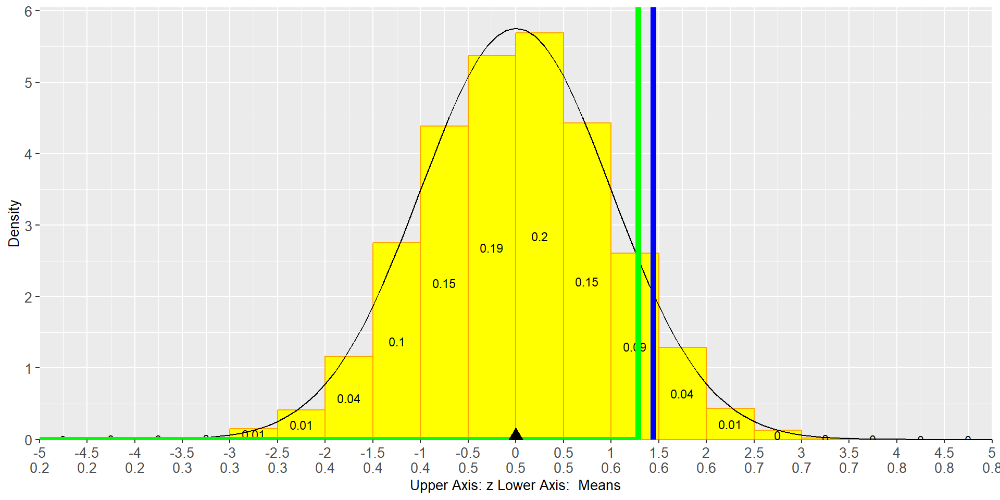
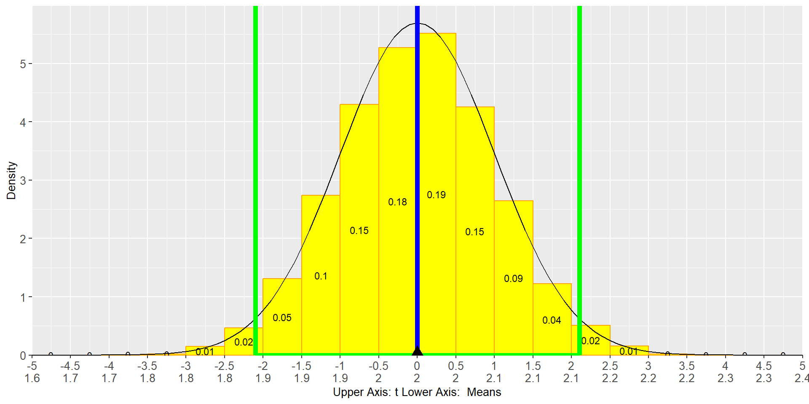
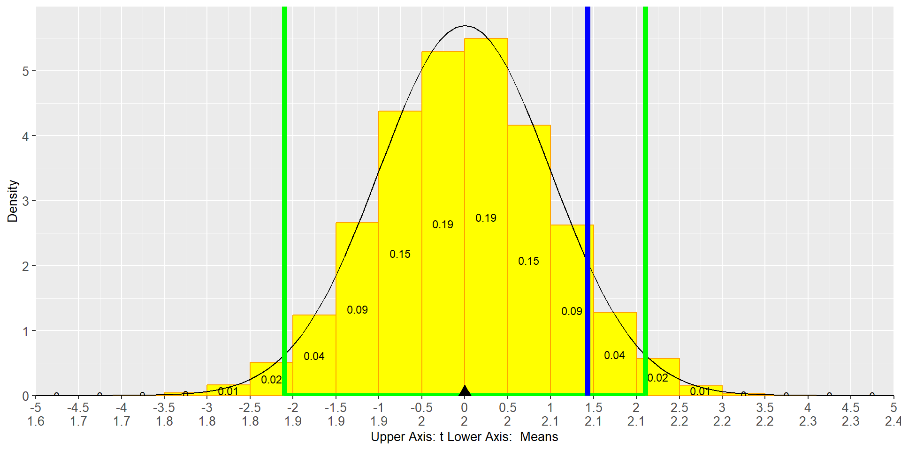
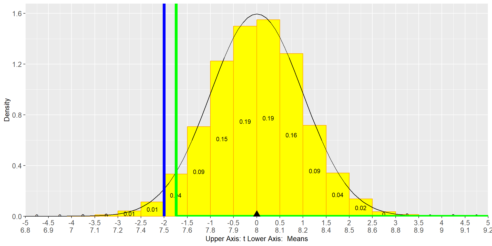
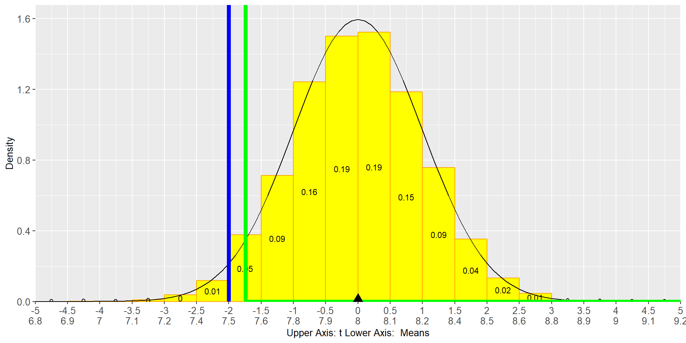
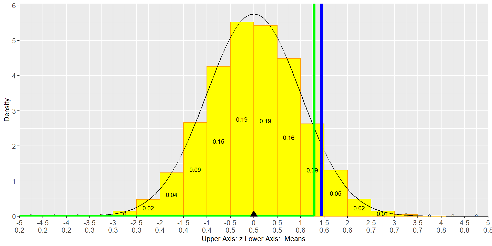
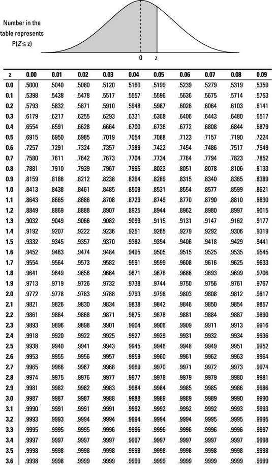
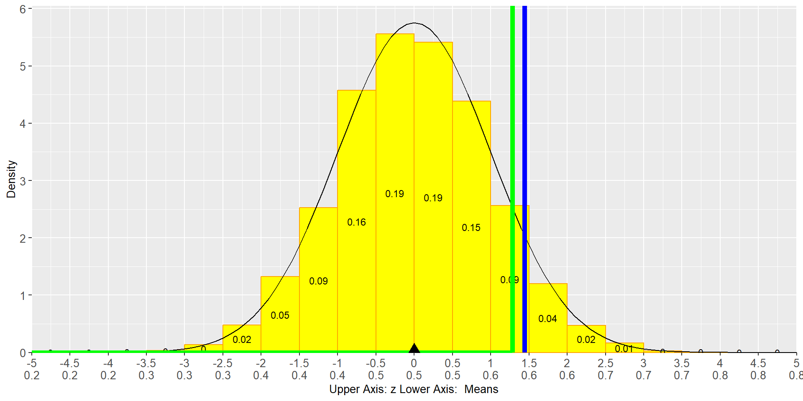
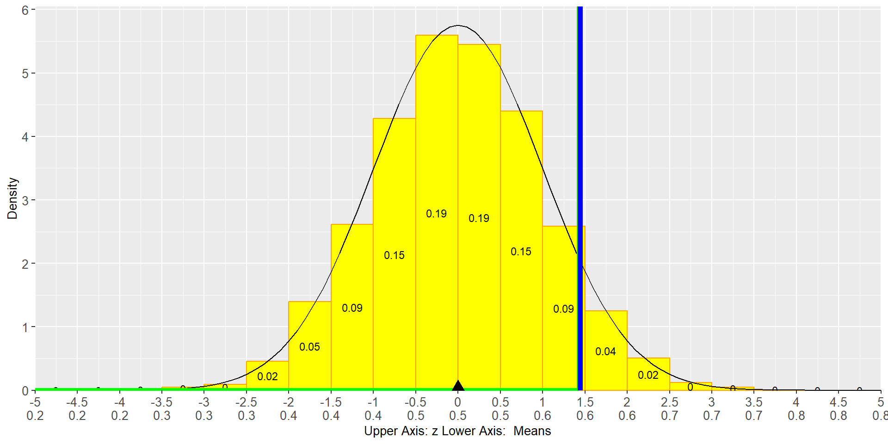

Hypothesis Tests
The Idea of a Hypothesis Test
- We use a hypothesis that we do not believe in, and we pretend it is true.
- Then we use data to show that it is very unlikely that the hypothesis is true.
Searching for a Contradiction
The Logic of a Hypothesis Test
- The Assumption:
-
We start with a claim we actually doubt (Null Hypothesis).
- The “Pretend” Phase:
-
We act as if that claim is true.
- The Reality Check:
- We look at our data and hope to deduct that the assumption (Null Hypothesis) is unlikely to be true.
Example: We believe a Scale is not measuring Precisely
A meat-packing department of a large grocery store packs ground beef in 2-pound portions. They are concerned that their machine is no longer packaging the beef to the required specifications.
To test the claim that the average weight of ground beef packed is not 2 pounds, the store measures the average weight for 20 packages of beef with a high precision scale.
The sample mean is 2.10 with a standard deviation of 0.33 pounds.
Is there evidence at the 0.95 level of significance that the machine is not working properly?
Assume that the weights are normally distributed.
Example: We believe a Scale is not measuring Precisely
The Assumption that we doubt (Null Hypothesis):
\[\mu=2\]
Alternative (Research) Hypothesis:
\[\mu \neq 2\]
The “Pretend” Phase:
We act as if the Null Hypothesis claim is true and use the Standard Error from the data sample as an estimate for the true Standard Error:
\[SE=\frac{0.33}{\sqrt{20}}=0.07\]

If the Null Hypothesis (\(\mu=2\)) is true and we assume 0.95% confidence the sample mean should fall somewhere in the \(0.95\) confidence interval in 95% of all cases. It would be outside of the confidence interval in only 5% of the cases which is considered unlikely.
Hypothesis Test
Steps
Standard Deviation is estimated from sample => t-table
\[\alpha=1-0.95=0.05\]
\[\alpha/2=0.05/2=0.025\]
\[d.f=20-1=19\]
\[t_{\alpha/2}=2.093\]
If our sample mean is between \(-2.093\) and \(+2.093\) Standard Errors away from the (assumed) mean, then it could have happened by chance and we cannot reject the hypothesis that the mean is \(\mu=2\).
t-Table

Is our Sample mean is between +/- 2.093 Standard Errors Away from the Mean?
Does our sample t-value lie outside the non-rejection zone?

\[t_{Sample}=\frac{2.1-2}{\frac{0.33}{\sqrt{20}}} = 1.36\]
We cannot reject the Null Hypothesis. The deviation from 2 might be accidental.
One Tailed Hypothesis Tests
Nurses in a large teaching hospital have complained for many years that they are overworked and understaffed.
The consensus among the nursing staff is that they average at least 8 patients per nurse each shift.
The hospital administrators claim that the average is lower than 8.
In order to prove their point to the nursing staff, the administrators gather information from 19 nurses. The sample mean is 7.5 with a standard deviation of 1.1 patients.
Test the administrators’ claim for a confidence level of 95% and assume that the average number of patients per nurse follows a normal distribution.
One Tailed Hypothesis Tests
Null Hypothesis, Research Hypothesis, Sample Statistics
The Assumption that the researcher doubts (Null Hypothesis):
\[\mu>=8\]
Alternative (Research) Hypothesis:
\[\mu < 8\]
Data:
\[\alpha=1-0.95=0.05\]
\[SE=\frac{1.1}{\sqrt{19}}=0.25\]
\[d.f.=19-1=18\]
\[\bar x=7.5\]
One Tailed Hypothesis Tests
Result Graph

Hypothesis Test
Steps
\[\alpha=1-0.95=0.05\]
\[d.f=19-1=18\]
\[t_\alpha=-1.734\]
If our sample mean is less than \(-1.734\) Standard Errors away from the (assumed) mean, then it could have happened by chance and we cannot reject the hypothesis that the mean is \(\mu=8\).
t-Table
Is our Sample mean more than -1.734 Standard Errors Away from the Mean?
Does our sample t-value lie outside the non-rejection zone?

\[t_{Sample}=\frac{7.5-8}{\frac{1.1}{\sqrt{19}}}=\frac{-0.5}{0.25} = -2\]
We can reject the Null Hypothesis. The deviation from 8 is so big that it is not likely (5%) to happen just by accident.
One Tailed Hypothesis Tests for Proportions
It is believed that less than 50% of voters favor a tax increase to pay for new schools.
The school board believes that more than 50% of the voters favor a tax increase. To test their claim, they asked 50 voters whether they favor the tax increase and 30 said that they would vote in favor of the tax increase.
If the school board wishes to be 90% confident with their conclusion, is the deviation high enough to reject the claim a majority of voters are not willing to support new schools with taxes?
One Tailed Hypothesis Test for Proportions
The Assumption that the researcher doubts (Null Hypothesis):
\[p<0.5\]
Alternative (Research) Hypothesis:
\[p \ge 0.5\]
Data:
\[\widehat{p}=\frac{30}{50}=0.6\]
\[SE=\sqrt{\frac{\widehat{p}(1-\widehat{p})}{N}}=\sqrt{\frac{0.6\cdot (1-0.6)}{50}}=0.07\]
Normal Distributed (enough observations)?
\[50\cdot 0.6=30>5 \mbox{ and } 50\cdot (1-0.6)=20>5\]
One Tailed Hypothesis Test Proportions
Result Graph

Hypothesis Test
Critical z-Value
\[z_{0.9}=1.28\]
If our sample proportion is less than \(1.28\) Standard Errors above the (assumed) proportion, then it could have happened by chance and we cannot reject the hypothesis that the true proportion is \(p<0.5\).
z-Table

Is our Sample proportion less than 1.28 Standard Errors Away from the Mean?
Does our sample z-value lie outside the non-rejection zone?

\[z_{Sample}=\frac{0.6-0.5}{0.07}=\frac{0.1}{0.07} = 1.43\]
We can reject the Null Hypothesis. The deviation from 0.5 is so big that it is not likely (10%) to happen just by accident.
What is the highest Confidence Level where we still can Reject
Confidence=0.9
Remember:
\[z_{Sample}=\frac{0.1}{0.07} = 1.43\]
Confidence=0.9236

z-Table
The Error Matrix
| \(H_0\) is True | \(H_0\) is False | |
|---|---|---|
| Fail to Reject \(H_0\) | Correct Decision | Type II Error (\(\beta\)) “False Negative” |
| Reject \(H_0\) | Type I Error (\(\alpha\)) “False Positive” |
Power (\(1 - \beta\)) Correct Decision |
Type I Error (\(\alpha\))
“The False Positive”
This error occurs when the Null Hypothesis (\(H_0\)) is true, but we incorrectly reject it.
- Mechanism: We conclude there is an effect or difference when none actually exists.
- Probability: Defined by the significance level \(\alpha\) (e.g., 0.05 or 0.10).
- Example: In our \(p < 0.5\) test, a Type I error would be concluding the proportion is NOT <0.5 when it actually is.
The Decision Matrix
Balancing \(\alpha\) and \(\beta\)
| \(H_0\) is True | \(H_0\) is False | |
|---|---|---|
| Fail to Reject \(H_0\) | Correct Decision | Type II Error (\(\beta\)) “False Negative” |
| Reject \(H_0\) | Type I Error (\(\alpha\)) “False Positive” |
Power (\(1 - \beta\)) Correct Decision |
The Trade-off: Lowering \(\alpha\) (to avoid Type I errors) typically increases \(\beta\) (making Type II errors more likely), unless you increase the sample size \(n\).